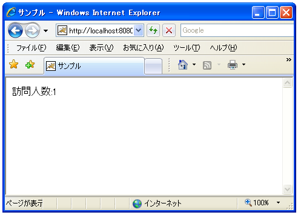
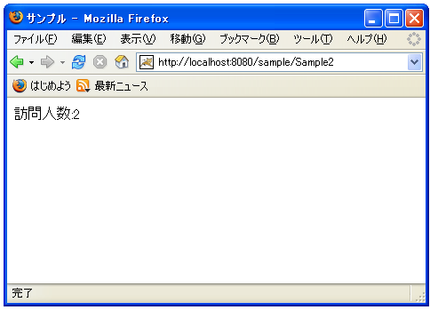

サーブレットのライフサイクルとインスタンス変数
サーブレットのライフサイクルに関して確認しておきます。
サーブレットはTomcatなどのサーブレットが動作するコンテナが起動してから最初にサーブレットが呼ばれたときにコンテナにロードされインスタンスが作成されます。
サーブレットはリクエストに対してスレッドを作成し、そのスレッドが実際の処理を行います。複数のリクエストが同時にあればそれぞれ別のスレッドが用意されマルチスレッドで動作することになります。スレッドはリクエストに対する処理が終われば終了しますがインスタンスはそのまま残っており新しいリクエストが来れば新しいスレッドを作成して実行します。そのため2回目以降はインスタンスを作成する時間がかかりません。
コンテナが終了したり一定時間サーブレットに対してアクセスが無かった場合にインスタンスは破棄されます。
サーブレットの作成から破棄までの流れは以上のようになっており、初回と最後以外はインスタンスがある状態で実行され、同じインスタンスが共有して利用されるようになっています。この共有されるインスタンスに対して作成時に初期化処理を一度実行することが出来ます。これは次のページで見ていきます。
インスタンス変数を用いたサンプル
サーブレットはリクエストがあるたびにスレッドが用意されて実行されますが、インスタンスに含まれるスレッドで共有される変数を作成することが出来ます。これがインスタンス変数です。
インスタンス変数はクラス内に記述され、特定のメソッドの外側に記述されている変数です。
import java.io.*;
import javax.servlet.*;
import javax.servlet.http.*;
public class Sample extends HttpServlet {
int count = 0;
public void doGet(HttpServletRequest request, HttpServletResponse response)
throws IOException, ServletException{
int local_count = 0;
}
}
上記の赤字で記述された変数がインスタンス変数です。この変数は全てのスレッドで共有して利用される変数ですので、同じ変数に対して別々のスレッドがそれぞれ参照したり値を変更したりする事が出来ます。
それに対して「doGet」などのメソッド内に記述されたローカル変数はスレッド毎に独立していますので、あるスレッドのローカル変数に別のスレッドがアクセスすることは出来ません。
例えばカウンターの値などスレッド全体で共有できる値を持つことが出来る反面、何か処理をしている途中で別のスレッドから値を書き換えられるようなケースも考えられるためインスタンス変数を使う場合には注意が必要です。またインスタンス変数もインスタンスが終了すれば破棄されてしまいます。
インスタンス変数の初期化はメソッド内で実行すると、スレッドが新しく作られるたびに行われてしまいますので問題が起きてしまいます。そこで上記のように変数宣言時に行うか、インスタンスが作成される時に一度だけ実行される「init」メソッド内で行います。
では簡単なサーブレットを作成してインスタンス変数のテストを行います。
import java.io.*;
import javax.servlet.*;
import javax.servlet.http.*;
public class Sample2 extends HttpServlet {
int count = 0;
public void doGet(HttpServletRequest request, HttpServletResponse response)
throws IOException, ServletException{
response.setContentType("text/html; charset=Shift_JIS");
PrintWriter out = response.getWriter();
StringBuffer sb = new StringBuffer();
sb.append("<html>");
sb.append("<head>");
sb.append("<title>サンプル</title>");
sb.append("</head>");
sb.append("<body>");
count++;
sb.append("<p>訪問人数:");
sb.append(count);
sb.append("</p>");
sb.append("</body>");
sb.append("</html>");
out.println(new String(sb));
out.close();
}
}
このサンプルはアクセスカウンターを実現する簡単なサーブレットです。
サンプルプログラムをコンパイルして作成した「Sample2.class」ファイルと別途作成した「web.xml」ファイルを次のように配置します。
D:¥ -- servlet-sample
|
+-- WEB-INF
|
+-- (web.xml)
|
+-- classes
|
+-- (Sample2.class)
web.xmlファイルは次のようになります。
<?xml version="1.0" encoding="ISO-8859-1"?>
<web-app xmlns="http://java.sun.com/xml/ns/j2ee"
xmlns:xsi="http://www.w3.org/2001/XMLSchema-instance"
xsi:schemaLocation="http://java.sun.com/xml/ns/j2ee
http://java.sun.com/xml/ns/j2ee/web-app_2_4.xsd"
version="2.4">
<servlet>
<servlet-name>Sample2</servlet-name>
<servlet-class>Sample2</servlet-class>
</servlet>
<servlet-mapping>
<servlet-name>Sample2</servlet-name>
<url-pattern>/Sample2</url-pattern>
</servlet-mapping>
</web-app>
コンテキストファイルを作成し「(Tomcatをインストールしたディレクトリ)¥Tomcat 5.5¥conf¥Catalina¥localhost¥」ディレクトリに「sample.xml」ファイルとして保存します。内容は以下の通りです。
<Context path="/sample" docBase="d:/servlet-sample/sample"> </Context>
準備は以上です。ではTomcatを再起動してから「http://localhost:8080/sample/Sample2」へブラウザでアクセスして下さい。

まず最初にサーブレットにアクセスした時にサーブレットのインスタンスが作成され、その後でスレッドが作成されて実行されます。インスタンスで共有されるインスタンス変数もこの時に初期化されます。サンプルではインスタンス変数を+1して表示するだけなので「1」と表示されます。
では同じサーブレットに別のクライアントからアクセスしてみます。

別のリクエストがあるとスレッドが新規に作成され実行されます。この時すでにインスタンスは作成されておりインスタンス変数も存在している状態となっています。サンプルプログラムによってインスタンス変数が+1されて表示されますが、最初のリクエストによってインスタンス変数は「1」になっていましたので、今回は+1されて「2」が表示されます。
このようにインスタンス変数は共有して利用される変数となりますので、便利な反面十分に注意して利用する必要があります。
( Written by Tatsuo Ikura )

著者 / TATSUO IKURA
初心者～中級者の方を対象としたプログラミング方法や開発環境の構築の解説を行うサイトの運営を行っています。